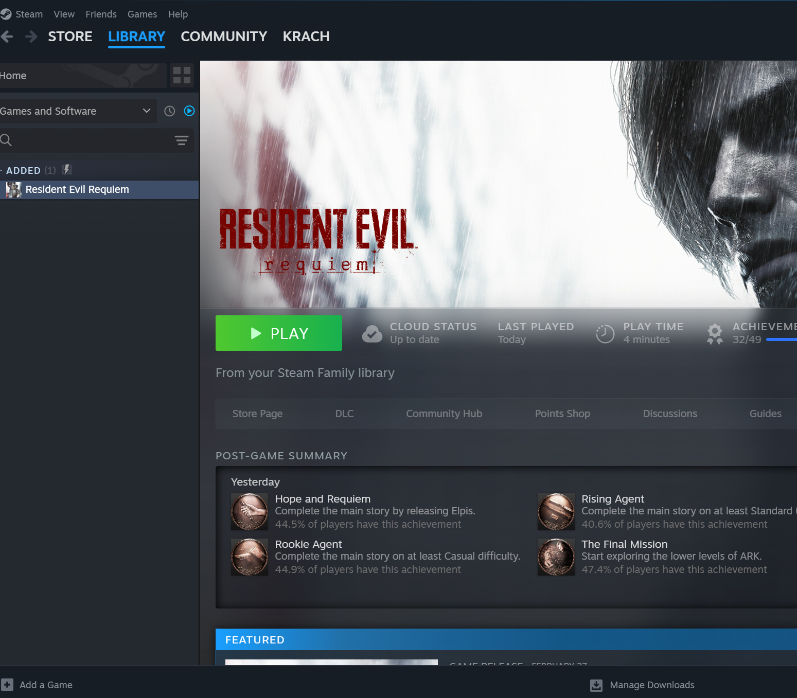
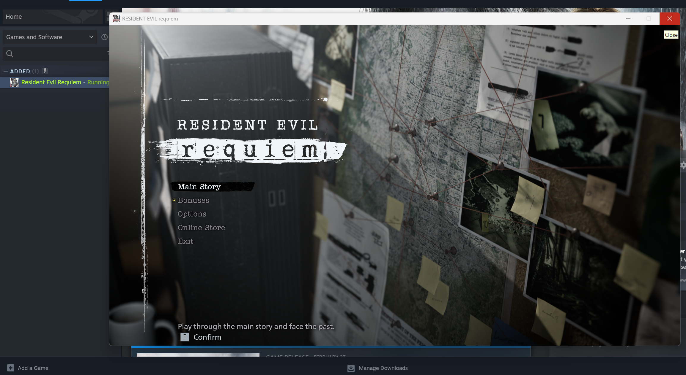
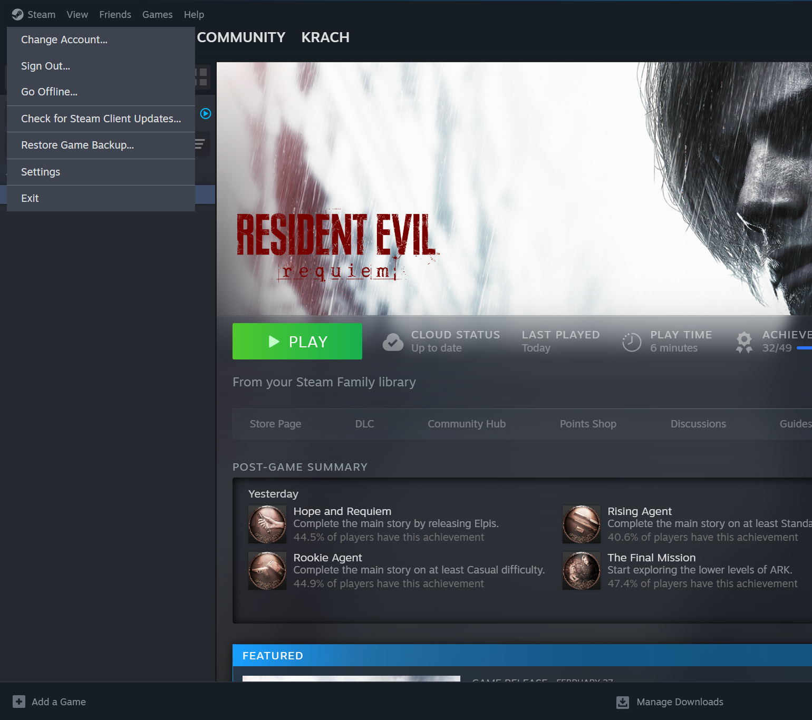
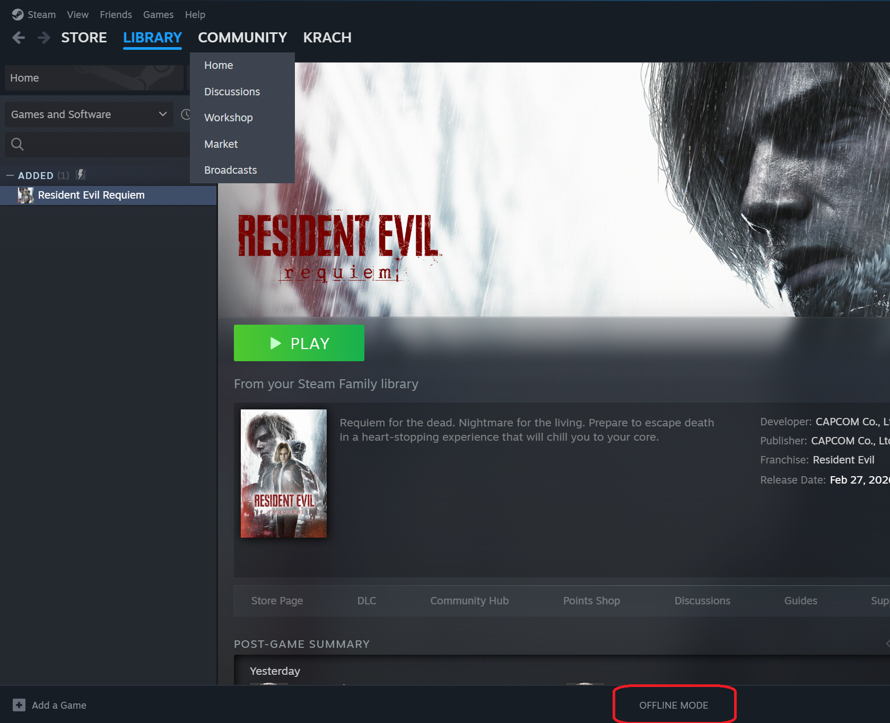

كيفاش تلعب — خطوة بخطوة
اختار المنصة ديالك وتبع الدليل — واضح وسهل لكل طريقة
كنعطيوك حساب Steam فيه اللعبة. خاصك تدخل مرة واحدة أونلاين، تشغّل اللعبة، مبعد تمشي للوضع الأوفلاين — وتلعب بدون انترنت للأبد.
افتح Steam وادخل باسم المستخدم وكلمة السر اللي وصلاتك منا. اكتبهم بالضبط — الحروف الكبيرة والصغيرة مهمة.

Steam غا يطلب تأكيد. ما دير والو — بقى على هاد الشاشة وراسلنا على الواتساب. غادي نرسلوك الكود في الحين أو نوافقو من الموبايل.

مبعد ما دخلت، غا تلقى اللعبة في المكتبة. انقر على PLAY وانتظر حتى توصل للشاشة الرئيسية ديالها — هاد الخطوة ضرورية للتفعيل.

مجرد ما وصلت للشاشة الرئيسية — خرج من اللعبة. انقر Exit من القائمة أو X من فوق.

من القائمة فوق، انقر على Steam مبعد Go Offline… مبعد Restart in Offline Mode.

Steam دابا شغّال بدون انترنت. تقدر تلعب اللعبة متى بغيتي — شوف OFFLINE MODE في الأسفل على اليمين.

Xbox Direct — أسهل طريقة. كنضيفو حساب اللعبة مباشرة على Xbox ديالك وتلعب من حسابك الشخصي بدون أي قيود أو ضبط إضافي.
-
1اذهب إلى الإعدادات على Xbox ديالك ← الحساب ← إضافة حساب جديد
-
2أدخل الإيميل وكلمة السر ديال الحساب اللي عطيناك إياه
-
3إذا طلب تأكيد — راسلنا على الواتساب وغادي نرسلوك الكود فوراً
-
4بمجرد ما يدخل الحساب، غادي تلقى اللعبة متاحة في مكتبتك مباشرة
-
5ارجع لحسابك الشخصي وشغّل اللعبة — راها جاهزة تلعب بحسابك الخاص
Xbox Method — نفس النتيجة بطريقة مختلفة. تلعب اللعبة على جهازك بدون ما تضيف الحساب بشكل دائم. خاصك تطبق خطوات معينة في كل مرة.
-
1قفّل حسابك الشخصي على Xbox (Sign out)
-
2ادخل بحساب AccessGames اللي عطيناك — إيميل + كلمة السر
-
3إذا طلب كود تأكيد — راسلنا وغادي نرسلوك إياه فوراً
-
4شغّل اللعبة مرة وحدة من حساب AccessGames
-
5قفّل حساب AccessGames (Sign out) وادخل بحسابك الشخصي
-
6شغّل اللعبة مرة أخرى — دابا راها تلعب بحسابك الخاص
PS4/5 — P3 (Primary) — أحسن تجربة على PS. اللعبة كتظهر في مكتبتك الشخصية، تجمع تروفيز بحسابك، وتلعب أونلاين وأوفلاين.
-
1اذهب إلى الإعدادات على PS ديالك ← المستخدمون والحسابات ← إضافة مستخدم جديد
-
2أدخل الإيميل وكلمة السر ديال حساب AccessGames
-
3إذا طلب تأكيد — راسلنا على الواتساب وغادي نرسلوك الكود في الحين
-
4من حساب AccessGames، روّح لـ PlayStation Store وتحقق باش اللعبة موجودة
-
5اذهب لـ الإعدادات ← مستخدمون وحسابات ← الحساب الأساسي واجعل هاد الـ PS الجهاز الأساسي للحساب
-
6ارجع لحسابك الشخصي وشغّل اللعبة — راها في مكتبتك بحسابك الخاص
PS4/5 — P2 (Secondary) — تلعب مباشرة من حساب AccessGames. أرخص خيار لكن محتاج إنترنت طول ما تلعب وما كتجمعش تروفيز في حسابك الشخصي.
-
1اذهب لـ الإعدادات ← مستخدمون وحسابات ← إضافة مستخدم
-
2أدخل الإيميل وكلمة السر ديال حساب AccessGames
-
3إذا طلب تأكيد — راسلنا وغادي نرسلوك الكود فوراً
-
4من حساب AccessGames مباشرة، شغّل اللعبة وتمتع بيها